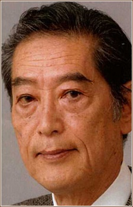
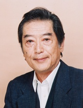

- Fullmetal Alchemist: Brotherhood
- Fullmetal Alchemist: Brotherhood - 4-Koma Theater
|  |
Kinryuu Arimoto is a Japanese voice actor. He formerly employed by Production Baobab. He works in animes such as Fullmetal Alchemist Brotherhood, Citrus and Baccano!
|
 |
|---|
| |
Dr. Knox |
|
Dr. Knox was a docter for the military ordered to gather information to the effect of burns and pain on the human body. He continued to pratice pathology and forensics after the war. |